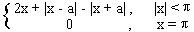
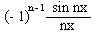
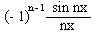
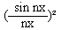
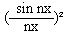
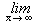
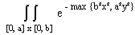

Analiza 2
okt. '95
smer: N, V; asistent: V. Grujic
1. Neka je ƒa : R ® R definisana sa : ƒa(x) = 
a) Razviti funkciju ƒa u Furijeov red.
b) Izracunati:  ,
,
 ,
x Î (0, p).
,
x Î (0, p).
2. Date su povrsi G1: x² + y² = a², G2: x / a + z / h = 1 (a, h > 0). Neka je C = G1 Ç G2 i W telo ograniceno njima.
a) Izracunati  (y
- z)dx + (z - x)dy + (x - y)dz, neposredno i pomocu Stoksove formule.
(y
- z)dx + (z - x)dy + (x - y)dz, neposredno i pomocu Stoksove formule.
b) Odrediti povrsinu i zapreminu tela W.
3. U pravilnu kupu poluprecnika osnove R i ugla pri osnovi a, upisati dva valjka ciji je zbir zapremina maksimalan.
4. Dat je integral I(x) =  ln
(x² - sin² t) dt, (x > 1)
ln
(x² - sin² t) dt, (x > 1)
a) Dokazati da je ( I(x) - p ln x) = 0.
b) Izracunati I(x).
5. Izracunati: dxdy.